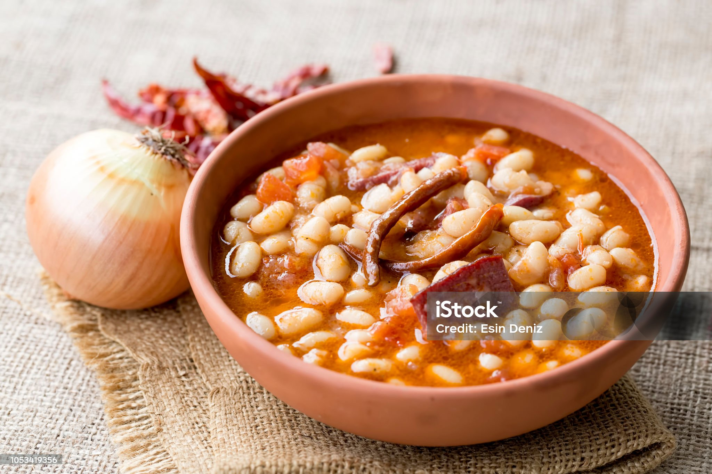

KuruFasulye

Malzemeler
- 1 su bardağı kuru fasulye
- 1 baş kuru soğan
- 1 tatlı kaşığı domates salçası
- 1 yemek kaşığı zeytinyağı
Yapılışı
- Bir su bardağı kuru fasulyeyi bir gece suda bekletiyoruz. Ertesi gün orta derece yumuşayana kadar kaynar suda haşlıyoruz. Kuru fasulyenin haşlanmış gazlı suyunu döküyoruz ve fasulyeyi suda geçiriyoruz.
- Genişçe olan çelik tencereye bir yemek kaşığı zeytinyağımızı koyuyoruz. Yağımızı yakmadan kızdırıyoruz.
- Soğanı dilediğimiz şekilde doğrayıp yağda kavuruyoruz.
- Soğan iyice ölünce bir tatlı kaşığı domates salçasını tencereye koyuyoruz. Salçayı yakmadan kavuruyoruz.
- Ardından kuru fasulyeyi tencereye aktarıyoruz.
Home